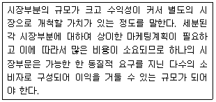
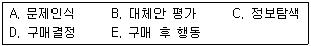
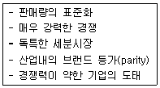
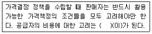
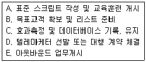
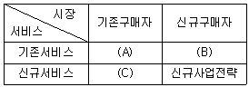
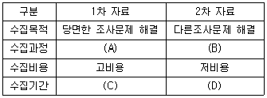
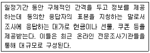
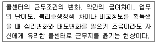
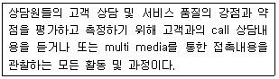

텔레마케팅관리사 (2009-05-10 기출문제)
1과목: 판매관리
1. 다음 중 강한 상표애호도를 가지는 소비재는?
- 편의품
- 전문품
- 선매품
- 부속장치품
(정답률: 알수없음)

2. 다음 중 시장세분화의 심리 분석적 변수는?
- 소득
- 직업
- 도시의 크기
- 라이프스타일
(정답률: 알수없음)
3. 유통경로의 설계과정을 바르게 나열한 것은?
- 고객욕구의 분석 → 주요 경로대안의 식별 → 경로대안의 평가 → 유통경로의 목표 설정
- 유통경로의 목표 설정 → 고객욕구의 분석 → 주요 경로대안의 식별 → 경로대안의 평가
- 유통경로의 목표 설정 → 주요 경로대안의 → 식별 경로대안의 평가 → 고객욕구의 분석
- 고객욕구의 분석 → 유통경로의 목표 설정 → 주요 경로대안의 식별 → 경로대안의 평가
(정답률: 알수없음)
4. 제품의 분류 중 전문품의 특성에 해당하지 않은 것은?
- 대체품이 존재하지 않고 브랜드 인지도가 높다.
- 소비자가 품질, 가격, 색상, 디자인을 중심으로 대체상품을 비교한후 선택하는 성향의제품이다.
- 일반적인 고가격 정책을 유지한다.
- 명품으로 유명 디자이너의 상품, 의상, 미술작품 등이 해당한다.
(정답률: 알수없음)
5. 소비자가 제품 또는 서비스의 공급자를 변경할 때 발생하는 전환 비용에 관한 설명으로 틀린 것은?
- 탐색비용-병원의 초진료와 같이 서비스 개시를 위해 들여야 하는 비용
- 학습비용-새로운 시스템에 적응하는데 드는 비용
- 감정비용-공급자와의 장기적 관계가 끊어질 때 경험하는 감정적인 혼란
- 인지적 비용-공급자를 바꿀 것인지의 여부를 생각하는 것과 관련된 비용
(정답률: 알수없음)
6. 다음 중 가맹점(franchisee)입장에서의 프랜차이징의 장점과 가장 거리가 먼 것은?
- 성장에 필요한 자본을 확보하는데 용이하다.
- 사업에 실패할 위험을 줄여준다.
- 이미 성공적으로 구축된 브랜드명을 활용할 수 있다.
- 운영상의 노하우를 제공받을 수 있다.
(정답률: 알수없음)
7. 포지셔닝 전략을 개발하기 위한 경쟁분석의 정보에 해당하는 것은?
- 시장점유율
- 기술상의 노하우
- 성장률
- 인적자원
(정답률: 알수없음)
8. 소비재(cunsumer product)에 해당하지 않은 것은?
- 편의품
- 선매품
- 전문품
- 소모품
(정답률: 알수없음)
9. 다음은 효과적인 시장세분화의 요건 중 무엇에 관한 설명인가?

- 측정가능성
- 접근가능성
- 유지가능성
- 실행가능성
(정답률: 알수없음)
10. 아웃바운드 텔레마케팅의 성공 요인과 가장 거리가 먼 것은?
- 브랜드 품질의 확보와 신뢰성
- 고객 니즈에 맞는 전용상품과 특화된 서비스 발굴
- 정확한 대상고객의 선정
- 탄력적인 인력배치
(정답률: 알수없음)
11. STP 전략의 절차를 바르게 나열한 것은?
- 시장세분화 → 표적시장 선정 → 포지셔닝
- 표적시장 선장 → 시장세분화 → 포지셔닝
- 포지셔닝 → 표적시장 선정 → 시장세분화
- 시장세분화 → 포지셔닝 → 표적시장 선정
(정답률: 알수없음)
12. 제품 또는 서비스의 가격결정 시 상대적인 고가전략이 적합한 경우는?
- 시장수요의 가격탄력성이 높을 때
- 원가우위를 확보하고 있어 경쟁기업이 자사 상품 가격만큼 낮추기 힘들 때
- 시장에 경쟁자의 수가 많을 것으로 예상될 때
- 진입장벽이 높아 경쟁기업의 진입이 어려울 때
(정답률: 알수없음)
13. 마케팅 전략의 수립에 있어서 당사자의 3C에 해당하지 않은 것은?
- customer
- contents
- company
- competitor
(정답률: 알수없음)
14. 소비자 구매의사결정 과정을 바르게 나열한 것은?

- A → B → C → D → E
- B → A → C → D → E
- A → C → B → D → E
- B → C → A → D → E
(정답률: 알수없음)
15. 다음 설명이 해당되는 제품의 수명주기는?

- 도입기
- 성장기
- 성숙기
- 쇠퇴기
(정답률: 알수없음)
16. 다음 ( )안에 들어갈 알맞은 것은?

- 변동비
- 원가경쟁
- 가격상한선
- 가격의 범위
(정답률: 알수없음)
17. 기업이 시장에서 재포지셔닝을 필요로 하는 상황이 아닌 것은?
- 경쟁자의 진입에도 차별적 우위를 지키고 있는 경우
- 이상적인 위치를 달성하고자 했으나 실패한경우
- 시장에서 바람직하지 않은 위치를 가지고 있는 경우
- 유망한 새로운 시장 적소나 기회가 발견되었을 경우
(정답률: 알수없음)
18. 아웃바운드 텔레마케팅의 활용분야가 아닌 것은?
- 가망고객 획득
- 직접 판매
- 반복구매 촉진
- 컴플레인 접수 처리
(정답률: 알수없음)
19. 소비자가 제품을 구매하는 의사결정에 있어 외적 정보의 획득 과정과 관여 유형이 바르게 짝지어진 것은?
- 직접적인 지속적 탐색-상황적 관여
- 직접적인 구매특이적 탐색-지속적 관여
- 비직접적인 구매특이적 탐색-상황적 관여
- 수동적 정보 획득-고관여
(정답률: 알수없음)
20. 아웃바운드 텔레마케팅 도입절차를 바르게 나열한 것은?

- B → D → A → E → C
- D → E → A → B → C
- A → B → C → D → E
- E → B → D → A → C
(정답률: 알수없음)
21. 아웃바운드 텔레마케팅의 특성과 가장 거리가 먼 것은?
- 고객주도적인 텔레마케팅이다.
- 기존 및 신규고객 관리에 유용하다.
- 대상고객의 명단이나 데이터가 있어야 한다.
- 데이터베이스마케팅 기법을 활용하면 더욱 효과적이다.
(정답률: 알수없음)
22. 새로운 제품전략 수립 시 기업의 성장기회를 확인하기 위한 다음 모형의 ( )안에 들어갈 가장 적합한 것은?

- A : 점유구축전략, B : 시장확장전략, C : 품목확장전략
- A : 시장확장전략, B : 점유구축전략, C : 품목확장전략
- A : 품목확장전략, B : 시장확장전략, C : 점유구축전략
- A : 점유구축전략, B : 품목확장전략, C : 시장확장전략
(정답률: 알수없음)
23. 제품의 수명주기별 특성에 따라 기업이 효율적으로 실행할 수 있는 전략과 가장 거리가 먼 것은?
- 도입기-얼리어댑터 등 제품의 조기 수용층의 규명
- 성장기-브랜드 선호의 개발
- 성숙기-경쟁자의 판촉과 균형유지
- 쇠퇴기-긍정적인 구전커뮤니케이션 자극
(정답률: 알수없음)
24. 다음 중 묶음가격의 효과에 관한 설명으로 옳은 것은?
- 기업은 핵심제품 또는 서비스에 대한 수요를 더욱 증대시킬 수 있다.
- 기업은 부수적인 제품 또는 서비스의 수요를 창출할 수 있다.
- 기업은 묶음가격을 통한 시너지 효과로 보다 높은 가격으로 제품 또는 서비스를 제공 할 수 있다.
- 소비자는 보다 많은 제품 또는 서비스에 대한 정보를 얻을 수 있다.
(정답률: 알수없음)
25. 고객 데이터베이스의 설계 및 활용 방안으로 적합하지 않은 것은?
- 고객의 체계적 분류를 실현한다.
- 고객별 DM 반응도를 분석한다.
- 제품별 판매 히스토리를 분석한다.
- 고객 라이프 스타일을 분류한다.
(정답률: 알수없음)
2과목: 시장조사
26. 다음 중 마케팅조사에 관한 설명으로 틀린 것은?
- 마케팅조사는 마케팅의사 결정을 위한 것이어야 한다.
- 마케팅조사는 실행가능한 정보를 제공해야한다.
- 마케팅조사는 체계적으로 자료를 수집, 분석, 해석해야 한다.
- 마케팅조사는 주관적, 공식적 과정이어야 한다.
(정답률: 알수없음)
27. 설문지를 구조적 설문지와 비구조적 나누는 기준으로 옳은 것은?
- 적용방법
- 피조사자의 이름을 밝히는 여부
- 질문구성형식
- 질문방법
(정답률: 알수없음)
28. 다음 중 전화설문 조사로 가장 적합한 조사 목적은?
- 그림이나 사진 등을 보고 평가하는 경우
- 신상품에 대한 브랜드 인지도를 조사할 경우
- 매장에 진열되어 있는 상품 종류를 알고자할 경우
- 복잡한 내용을 듣는다거나 앙케이트 항목이 많은 경우
(정답률: 알수없음)
29. 다음은 1차자료와 2차자료의 비교한 표이다. ( )안에 들어갈 알맞은 것은?

- A-저관여, B-고관여, C-장기, D-단기
- A-고관여, B-저관여, C-장기, D-단기
- A-저관여, B-고관여, C-단기, D-장기
- A-고관여, B-고관여, C-단기, D-장기
(정답률: 알수없음)
30. 다음 중 최소의 경비와 노력으로 광범위한 지역과 대상을 표본으로 삼을 수 있는 자료수집방법은?
- 면접조사법
- 관찰방법
- 우편조사법
- 전화조사법
(정답률: 알수없음)
31. 자유응답형과 같이 사전에 명확한 응답분류를 할 수 없는 항목을 코딩하는 기준으로 틀린 것은?
- 각 응답 항목들을 서로 중복되어서는 안 된다.
- 전체적으로 볼 때 가능한 모든 경우가 포함되어야 한다.
- 응답들에 대한 분류가 명확하지 않은 경우에는 통합화한다.
- 코딩시에는 분석이 가능하도록 숫자로만 입력하여야 한다.
(정답률: 알수없음)
32. 질문지를 구성하는 일반적인 방법과 가장 거리가 먼 것은?
- 첫 번째 질문은 쉽게 응답할 수 있고 흥미를 유발할 수 있는 것이 좋다.
- 응답자에 관련된 인적사항 질문을 우선적으로하여 긴장을 푸는 것이 좋다.
- 질문항목 간의 연계 및 관계를 고려하여 질문하는 것이 좋다.
- 응답자가 심사숙고해야 하는 질문은 가능한뒤에 하는 것이 좋다.
(정답률: 알수없음)
33. 조사통계를 위해 일반적으로 사용하는프로그램은?
- Powerpoint
- SPSS
- Oracle
- SQL Server
(정답률: 알수없음)
34. 다음 중 확률표본추출방법이 아닌 것은?
- 편의표본추출법
- 단순무작위표집
- 층화표집
- 집락표집
(정답률: 알수없음)
35. 의사소통수단에 의한 면접법의 분류에 해당되지 않는 것은?
- 대인면접법
- 전화면접법
- 우편면접법
- 역할면접법
(정답률: 알수없음)
36. 기업 마케팅 조사 영역과 가장 거리가 먼 것은?
- 시장 잠재력의 측정
- 시장 점유율 분석
- 장기수요 예측
- 인구 통계적 의식 조사
(정답률: 알수없음)
37. 기업에서 시장조사가 필요한 이유와 가장 거리가 먼 것은?
- 고객에 대한 이해
- 전략경영의 실행
- 기업에 대한 고객의 기대 향상
- 한정된 자원의 효율적 활용
(정답률: 알수없음)
38. 전화번호부에 의한 표본추출방법에 관한 설명으로 틀린 것은?
- 전화번호부에 표시된 지역구분보다 행정적인 경계로 표본단위를 정하는 것이 좋다.
- 가나다 순으로 된 전화번호부에서 표본을 추출 할 때 체계적으로 하되 중복되지 않게한다.
- 맨 앞이나 맨 끝은 가능한 피하는 것이 좋다.
- 최초의 목적이나 하나의 규정이 있으며 그대로 계속하는 것이 좋다.
(정답률: 알수없음)
39. 자료를 수집하고 자료를 처리하는 과정에서 코딩이나 입력을 하지 않아도 되므로 시간을 절약할 수 있는 조사는?
- 인터넷 조사
- 우편조사
- 전화조사
- 방문조사
(정답률: 알수없음)
40. 전화조사에서 발생될 수 있는 무응답 오류에 해당하는 것은?
- 데이터 분석에서 나타나는 오류
- 부적절한 질문으로 인하여 나타나는 오류
- 조사와 관련없는 응답자를 선정하여 나타나는 오류
- 응답자의 거절이나 비접촉으로 나타나는 오류
(정답률: 알수없음)
41. 다음 중 설문지 작성 원칙으로 틀린 것은?
- 질문은 간결하게 한다.
- 질문은 가치중립적이어야 한다.
- 규범적인 응답을 자아내도록 한다.
- 응답자의 수준에 맞는 언어를 사용한다.
(정답률: 알수없음)
42. 다음 중 탐색조사의 종류가 아닌 것은?
- 문헌조사
- 전문가조사
- FGI 조사
- 사례조사
(정답률: 알수없음)
43. 표본 프레임(sampling frame)에 관한 설명으로 틀린 것은?
- 표본을 추출하기 위한 모집단의 목록이다.
- 표본추출 단위가 집단인 경우에는 표본 프레임은 집단별 목록만 있으면 된다.
- 비확률표본추출방법을 이용할 경우에는 정확한 표본프레임이 있어야 한다.
- 정확한 확률표본추출을 하기 위해서는 모집단과 정확하게 일치하는 표본프레임이 확보되어야 한다.
(정답률: 알수없음)
44. 효과적인 전화조사를 위해 고려해야 할 사항이 아닌 것은?
- 응답자가 불편을 느끼지 않는 시간대를 선택한다.
- 전화조사 시에는 경제성을 고려하여 다양한 주제의 질문을 통하여 많은 내용을 조사한다.
- 전화조사시 적당한 통화시간은 5분 이내이며 10개 전후의 문항이 적당하다.
- 전화조사는 중간에 전화가 끊기거나 소음등에 방해를 받지 않도록 한다.
(정답률: 알수없음)
45. 질문지 작성시 폐쇄형 질문의 장점이 아닌 것은?
- 부호화와 분석이 용이하여 시간과 경비를 절약할 수 있다.
- 민감한 주제에 보다 적합하다.
- 질문지에 열거하기에는 응답범주가 너무 많을 경우에 사용하면 된다.
- 질문에 대한 대답이 표준화되어 있기 때문에 비교가 가능하다.
(정답률: 알수없음)
46. 사전조사에 관한 설명으로 적절하지 않은 것은?
- 설문지의 초안을 시험하는 단계이다.
- 1차로 작성된 설문지를 활용한다.
- 마케팅조사 내지 설문조사 경험이 있는 면접자 조사를 응답자로 하여 설문내용의 타당성을 검증한다.
- 설문자료를 코딩 및 분석하기 전에 코딩계획 작업을 구상하는 단계이다.
(정답률: 알수없음)
47. 우편조사에 관한 설명으로 틀린 것은?
- 응답요령이 상세하게 설명되어 있는 구조화된 설문지를 우편으로 조사대상자에게 발송하고 응답 후 반송하도록하는 조사방법이다.
- 지리적으로 거리가 멀고 광범위하게 분산되어 있는 경우에 경제적으로 조사를 할 수 있으며 상대적으로 많은 양의 질문을 할 수 있다.
- 조사자들이 시간을 두고 설문에 자세히 응답할 수 있기 때문에 우편조사의 가장 큰 장점은 높은 회수율이다.
- 우편 조사방법은 면접방식으로 응답하기 곤란한 사적인 내용에 대한 조사에 용이하다.
(정답률: 알수없음)
48. 다음은 무엇에 관한 설명인가?

- 모집단
- 모델
- 패널
- 판매자
(정답률: 알수없음)
49. 다음 중 기술적 조사에 해당하지 않는 것은?
- 종단조사
- 횡단조사
- 실험조사
- 패널조사
(정답률: 알수없음)
50. 검정요인 중 총체적 개념과 다른 변수와의 관계에 있어서, 총체적 개념을 구성하는 요소들 중 어떤 것이 관찰된 결과에 결정적인 영향을 미치는가 하는 것을 파악하는데 사용되는 것은?
- 억제변수
- 왜곡변수
- 구성변수
- 매개변수
(정답률: 알수없음)
3과목: 텔레마케팅관리
51. 인터넷 콜센터 서비스품질요소 중 기업이 고객에게 제공하는 개별적인 배려와 관심에 해당하는 것은?
- 공감성
- 확신성
- 반응성
- 유형성
(정답률: 알수없음)
52. 콜센터에서 수행하고 있는 업무 중심으로 콜센터를 구분할 경우에 해당하지 않는 것은?
- 인바운드형 콜센터
- 아웃바운드형 콜센터넡
- CTI시스템 자동화 콜센터넡
- 혼합형 콜센터
(정답률: 84%)
53. 인적자원의 가치를 체계적이고 합리적으로 특정하기 위한 지표에 관한 설명으로 틀린 것은?
- 인적자본 수익성지표-종업원 단위당 생산성
- 인적자원 경제적 부가가치표-종업원 단위당 실제 기업 이익
- 인적자본 투자수익률지표-인적자원에 대한 투자금액
- 인적자본 시장가치지표-종업원 단위당 지적자산 크기
(정답률: 알수없음)
54. 회원가입, 캠페인, 이벤트 등을 실시할때 사전에 보내진 메일을 수신한 고객에게 전화고지를 해서 개봉 촉진 또는 반응 효과를 향상시키기 위해 실시하는 것은?
- pre-call
- cold call
- pay-per-call
- handled call
(정답률: 알수없음)
55. 콜센터 운영비용 중 일반적으로 가장 많은 비용을 차지하는 것은?
- 인건비
- 네트워크
- 간접비
- 장비
(정답률: 알수없음)
56. 다음 중 아웃바운드 텔레마케팅의 성과지표로 적합하지 않은 것은?
- 시간당 판매량
- 평균 판매가치
- 평균포기 콜
- 판매건당 비용
(정답률: 알수없음)
57. 콜센터 조직의 구성원칙이 아닌 것은?
- 전문화
- 명령다원화
- 책임과 권한
- 감독한계 적정조화
(정답률: 알수없음)
58. 텔레마케터 지도(coaching)시 지켜야 할 올바른 태도가 아닌 것은?
- 본격적인 지도 전에 텔레마케터와 친밀감을 형성한다.
- 장점에 대한 칭찬을 곁들이면서 문제점에 대한 지적을 하고 동의를 구한다.
- 문제 지적 사항에 대해 상담원의 답변을 들을 필요는 없다.
- 문제점의 지적과 함께 개선 방안에 대해 제시하거나 토의 한다.
(정답률: 알수없음)
59. 텔레마케팅의 특성과 가장 거리가 먼 것은?
- 텔레마케팅은 기업을 정보창조 조직으로 변모시켜 기업의 경쟁력을 강화시킨다.
- 텔레마케팅은 시스템적 접근보다는 개별적인 접근법으로 실시되어야 한다.
- 체계적으로 정비된 데이터베이스가 없다면 텔레마케팅이 달성하고자 하는 목표의 달성을 기대 할 수 없다.
- 텔레마케팅은 시간, 공간, 거리의 장벽을 극복하는 첨단 마케팅기법이다.
(정답률: 알수없음)
60. 원활한 텔레마케팅의 전개에 꼭 필요한 구성요소가 아닌 것은?
- 텔레마케터
- 웹마스터
- 컴퓨터시스템
- 스크립트
(정답률: 알수없음)
61. 다음 마케팅 개념 중 텔레마케팅과의 연계성이 가장 적은 것은?
- 릴레이션쉽 마케팅
- 데이터베이스 마케팅
- 1:1 마케팅
- 바이러스 마케팅
(정답률: 알수없음)
62. 조직의 변화를 성공적으로 주도하기 위하여 인사 관리자가 수행해야 할 변화가 일어날 수 있도록 추진하는 역할은?
- 설계자
- 입증자
- 중재자
- 촉진자
(정답률: 알수없음)
63. 텔레마케터에 대한 코칭의 목적이 아닌 것은?
- 목표부여와 관리
- 감독일원화 및 전문화의 원칙 교육
- 상담원의 역할 인식과 업무 집중화
- 집중적인 학습과 자기개발
(정답률: 90%)
64. 스크립트에 관한 설명으로 틀린 것은?
- 활용목적을 명시한다.
- 간단 명료하게 작성한다.
- 수정은 할 수 없다.
- 대화체로 작성한다.
(정답률: 알수없음)
65. 텔레마케터의 유형에 따른 적합한 OJT 방법과 가장 거리가 먼 것은?
- 자기혁신형-약간 어렵다고 여겨질 만큼 상위의 과제나 목표를 준다.
- 자기만족형-어려운 과제를 부과하고, 때로는 진지하게, 정밀하게 해결방법을 지도한다.
- 수동형-결론을 내려주기 보다는 자신의 생각이나 의견을 제시할 수 있는 기회를 제공한다.
- 자기과시형-새로운 분야의 과제를 내주어 보람을 느끼게하며, 현재보다 더 높은 보조리더의 역할을 하게 한다.
(정답률: 알수없음)
66. 인바운드 콜센터 조직에 대한 설명으로 옳은 것은?
- 인바운드형 콜센터는 무엇보다 고객상담 서비스의 질적인 관리와 업그레이드가 요구된다.
- 외부로부터 걸려오는 전화를 받아서 처리하는 곳이기 때문에 전화량의 명확한 사전예측을 할 필요가 없다.
- 인바운드형 콜센터는 각종 광고나 알림, 서비스 개선약속을 대중매체를 통해 하는 곳이다.
- 인바운형 콜센터는 고객이 필요로해서 전화 했으므로 전문적인 상담스킬을 필요로 하지 않는다.
(정답률: 알수없음)
67. 콜센터 상담의 장점이 아닌 것은?
- 상담시 필요한 고객정보를 충분히 활용할 수 있다.
- 숙달된 상담원이 조리있게 설명한다.
- 고객의 상황을 쉽게 파악할 수 있다.
- 콜센터에서 이루어지는 업무진척도를 실시간에 확인할 수 있다.
(정답률: 82%)
68. 다음은 무엇에 관한 설명인가?

- 한우리 문화
- 유리벽
- 콜센터 바이러스
- 철새등지
(정답률: 알수없음)
69. 모니터링 평가를 위한 대상콜 선택시 고려해야 할 요소가 아닌 것은?
- 통화일시
- 문의유형
- 평균통화시간
- 상담원의 업무지식 정도
(정답률: 알수없음)
70. 콜센터 매니지먼트와 원칙과 거리가 먼 것은?
- 고객관리 목표의 구체화
- 권한과 책임의 명확화
- 상담원의 직급별 일률적인 보상
- 개인정보보호
(정답률: 67%)
71. 콜센터 수퍼바이저에게 요구되는 자질에관한 설명으로 틀린 것은?
- 조직의 목표가 달성할 수 있도록 최적의 콜센터 환경을 조성할 수 있어야 한다.
- 텔레마케터들의 통화품질, 업무성과, 근무만족도에 대해 평가 및 피드백을 할 수 있어야 한다.
- 콜센터의 운영 예산을 책정하고 집행할 수 있어야 한다.
- 조직 분위기를 활성화할 수 있는 다양한 이벤트와 프로모션을 실시할 수 있어야 한다.
(정답률: 알수없음)
72. 다음은 무엇에 관한 설명인가?

- QM(quality monitoring)
- 스크립트
- 벤치마킹
- 코칭
(정답률: 알수없음)
73. 콜센터의 생산성 향상을 위한 방법으로 옳은 것은?
- 언제나 기본 스크립트를 지속적으로 사용한다.
- 모니터링은 내부에서만 실시한다.
- 개인별, 팀별로 role playing과 코칭을 한다.
- 관리, 행정적 업무처리 절차를 강조한다.
(정답률: 알수없음)
74. 아웃바운드형 콜센터에 관한 설명으로 틀린 것은?
- 아웃바운드형 콜센터는 보다 더 성과지향적이고 수익지향적이다.
- 높은 성과와 수익창출을 올릴 수 있는 전문 조직체이지만 잘못 운영하면 커다란 위험에 놓을 수도 있다.
- 아웃바운드형 콜센터는 기업주도형이기 때문에 고객에 대해 뚜렷한 목적을 가지고 임해야 한다.
- 아웃바운드형 콜센터는 전문 텔레마케터만 갖추어져 있으면 고객에 대한 양질의 데이터는 없어도 된다.
(정답률: 알수없음)
75. 텔레마케터의 통화품질 평가시 고려사항이 아닌 것은?
- 텔레마케터의 통화품질을 평가할 때는 인바운드와 아웃바운드를 구분하지 않고 텔레마케터의 개인적 품성 중심으로 평가한다.
- 인바운드 업무와 아웃바운드 업무를 중심으로 평가목적, 평가방법, 평가 체크포인트를 달리해야 한다.
- 인바운드 텔레마케팅에서는 텔레마케터의 인성, 전화받는 태도, 음성, 발성의 진지함과 정밀성, 인내력 정도를 중심으로 평가한다.
- 아웃바운드에서는 진취적 성격, 제품 또는 서비스에 대한 전문지식의 전달, 고객설득 능력, 상황대응능력을 평가한다.
(정답률: 알수없음)
4과목: 고객응대
76. 다음 중 고객관계관리의 특징이 아닌 것은?
- 고객유지에 중점을 둔다.
- 고객점유율에 중점을 둔다.
- 고객관계에 중점을 둔다.
- 판매관리에 중점을 둔다.
(정답률: 알수없음)
77. 효과적인 고객상담을 위한 말하기 기술에 관한 설명으로 틀린 것은?
- 너무 장황하게 응답하지 않는다.
- 억양으로 소비자와 공감한다는 태도를 보인다.
- 지역에 따라 사투리, 방언 등을 사용한다.
- 상담의 진행을 위하여 유도성 질문을 이용한다.
(정답률: 알수없음)
78. 다음 중 고객상담 방법으로 적합하지 않은 것은?
- 신규고객인 경우에는 상담에 필요한 필수 인적 사항을 확인한다.
- 가격과 성능 등을 까다롭게 질문하는 고객에게는 간결하게 자사 상품의 장점만을 설명한다.
- 기존고객으로서 자사의 상품에 관심이 많은 고객에게는 과거 구매경력을 확인한 후 상담한다.
- 자사의 상품에 대해 막연한 기대감을 가진 고객에게는 고객이 전화를 건 주된 이유를 파악하도록 한다.
(정답률: 알수없음)
79. CRM을 통해 기업이 얻을 수 있는 성과가 아닌 것은?
- 우수고객 유지
- 직원능력개발
- 교차판매
- 비용절감
(정답률: 알수없음)
80. 다음 중 커뮤니케이션의 특성과 거리가 먼 것은?
- 수단의 고정화
- 정보교환과 의미부여
- 순기능과 역기능의 존재
- 오류와 장애의 발생가능성 존재
(정답률: 알수없음)
81. 고객의 평생가치에 관한 설명으로 옳은 것은?
- 처음으로 자사 제품 또는 서비스를 구입한 때부터 고객이 사망하는 시점까지의 기간
- 특정 회사의 제품 또는 서비스를 처음 구매하거나 요청한 기간
- 특정 회사의 제품 또는 서비를 구매한 날로부터 최종 반품처리한 날까지의 기간
- 특정 회사의 제품 또는 서비스를 처음 구매했을 때부터 시작해서 마지막으로 구매할 것이라고 판단되는 시점까지 구매가 가능한 제품이나 서비스의 누계
(정답률: 알수없음)
82. 고객유형별 상담기법에 대한 설명으로 가장 적합한 것은?
- 우유부단한 고객-의사결정 과정을 조금 앞에서 안내하되 최종결정은 스스로 했다는 인식을 갖도록 한다.
- 무례한 고객-목소리 크기를 약간 높여 말함으로써 상대방의 태도를 제압하는 것이 중요하다.
- 외국인 고객-고객의 언어사용에 주목하여 감정 상태를 이해한다.
- 오만한 고객-고객이 표현한 내용을 알기 쉽게 다시 말하는 것이 중요하다.
(정답률: 알수없음)
83. 성공적인 세일즈 화법으로 틀린 것은?
- 어떠한 상황에서도 동일한 응대과정을 갖는다.
- 왜 고객에게 지금 이익이 되는가를 집중 설명한다.
- 고객과 통화해야 하는 이유를 사전에 미리 이야기하여 고객과 친밀감을 조성한다.
- 상품 또는 서비스의 이익과 장점을 반복하여 고객이 납득할 수 있게 설명한다.
(정답률: 알수없음)
84. 고객응대의 질을 향상시키기 위해 상담사가 가져야 할 핵심요소와 가장 거리가 먼 것은?
- 긍정적인 태도와 적극성
- 비판적인 사고와 분석력
- 신뢰성과 고객존중
- 창의력과 원만한 대인관계
(정답률: 알수없음)
85. 기업이 고객의 불평불만업무를 효율적으로 처리하기 위해 지켜야 할 사항이 아닌 것은?
- 불평불만을 담당하는 부서에 고객이 접근하기 용이하게 해야 한다.
- 고객에게 업무처리 절차에 대한 홍보가 잘 되어 있어야 한다.
- 고객의 불평불만을 상담한 직원 뿐 아니라 관련 직원들도 처리절차 및 결과를 함께 인지해야 한다.
- 상담원이 주관적으로 즉시 처리할 수 있도록 한다.
(정답률: 60%)
86. 텔레마케팅에서 효과적인 경청방법에 관한 설명으로 틀린 것은?
- 끝까지 듣는다.
- 편안한 마음의 상태에서 듣는다.
- 듣고 있다는 것을 맞장구로 표현한다.
- 고객이 말하는 객관적인 초점을 둔다.
(정답률: 알수없음)
87. 통화량 폭증으로 인해 고객이 전화연결을 기다려야 하는 경우 가장 바람직한 전화대기 전략은?
- 대략 얼마나 기다려야 하는지, 현재 통화가 얼마나 밀려 있는지 알려준다.
- 대기하는 동안 회사 제품과 서비스 광고를 틀어준다.
- 클래식이나 대중음악의 한 소절을 따서 들려준다.
- 추억의 헤비메탈 음악을 틀어놓은 사내방송을 들려준다.
(정답률: 알수없음)
88. 상담 후 전화를 끊으면서 보여야 할 전화예절의 마지막 핵심행동과 가장 거리가 먼 것은?
- 앞으로 취할 행동단계를 되풀이해서 전화를 건 소비자와 상담사가 앞으로 처리하기로 한 합의한 내용을 확인한다.
- 전화를 걸어서 소비자에게 더 도와줄 일은 없는지 물어봄으로써 통화도중 빠뜨린 내용을 점검한다.
- 소비자에게 전화해주어서 고맙다는 인사와 함께 사안이 있었을 경우 문제를 자신에게 들고 온점을 고맙게 생각하고 있다는 것을 알려준다.
- 신속한 전화 상담을 위해 상담이 종결된 후에는 상담자가 먼저 수화기를 내려놓는다.
(정답률: 알수없음)
89. 대인커뮤니케이션 매체인 전화의 만족 요인 분석 중 상품을 주문하기 위한 만족 요인은?
- 도구성(instrumentality)
- 사교성(sociability)
- 심리적 안정성(reassurance)
- 신뢰성(reliability)
(정답률: 알수없음)
90. 고객응대 시 필요한 지식과 거리가 먼 것은?
- 고객의 구매심리 및 고객시장에 관한 지식
- 제품 및 서비스에 관한 지식
- 통신시스템에 대한 전문적인 지식
- 생산, 유통 과정과 품질에 관한 지식
(정답률: 알수없음)
91. 효율적 경청의 방해요인을 상담사의 개인적 요인과 외부 환경요인으로 구분할 때 개인적 요인이 아닌 것은?
- 편견
- 신체상태
- 잡념
- 사무실 집기 소음
(정답률: 알수없음)
92. 합리적인 행동스타일을 가진 고객과 상담할 때 적합한 상담 기술은?
- 표현을 간략하게 하므로 정보를 이끌어 내기 위해 개방형 질문을 사용한다.
- 개인정보를 주지 않으려고 하므로 사무적인 대화부터 시작하는 것이 좋다.
- 빨리 말하므로 말의 속도와 흥분 정도를 맞추어야 한다.
- 힘 있는 어조를 보이므로 방어적으로 반응하는 것은 좋지 않다.
(정답률: 알수없음)
93. 소비자들의 구매과정 중 구매전 단계에서의 커뮤니케이션 목표와 가장 거리가 먼 것은?
- 구매위험의 감소
- 상표인지의 증대앧
- 반복구매행동의 증대
- 구매 가능성의 증대
(정답률: 알수없음)
94. 다음 중 고객 측면에서 상담이 필요한 이유가 아닌 것은?
- 소비생활 전반에 대한 의사결정의 어려움
- 소비자불만에 적절히 대응하는 고객만족 경영의 도입
- 소비시장의 거대화 및 복잡화 현상에 따른 구매 지식부족
- 상품에 대한 불만이 생겼을 때 해결방안에 대한 도움의 필요
(정답률: 알수없음)
95. 고객과의 상담과정에서 재진술의 목적 또는 효과와 가장 거리가 먼 것은?
- 고객의 이야기를 적극적으로 듣고 있다는 신뢰감을 줄 수 있다.
- 재진술을 통해 고객의 문제 또는 욕구를 명확하게 이해할 수 있다.
- 재진술 과정을 통해 텔레마케터가 잘못 이해했던 부분을 발견할 수 있다.
- 텔레마케터가 재진술함으로써 고객은 더 이상 자신의 문제나 욕구를 설명할 필요가 없게 된다.
(정답률: 알수없음)
96. CRM이 등장하게 된 원인과 거리가 먼 것은?
- 고객서비스 만족도 미흡
- 고객 DB의 활용도 부족
- 고객 DB의 산재
- 고객욕구 단순화
(정답률: 알수없음)
97. 성공적인 인바운드 상담을 위한 기술에 관한 설명으로 옳은 것은?
- 고객의 언어적 표현뿐 아니라 억양과 속도를 고려하여 고객의 요구를 잘 파악하도록 한다.
- 상담을 할 때 고객에 대한 신뢰감을 높이기 위해 전문적인 용어로 고객을 설득한다.
- 고객과 직접 만나는 상황이 아니라 점을 크게 인식할 필요가 없다.
- 고객과 친밀감을 조성해야 하므로 간결한 말투를 사용하는 것은 피한다.
(정답률: 알수없음)
98. 전화 상담에서 필요한 말하기 기법에 관한 설명으로 틀린 것은?
- 전화로 이야기할 때에도 미소를 지으며, 필요한 낱말에 강세를 두어야 말한다.
- 어조를 과장하여 억양에 변화를 주는 것은 소비자의 집중력을 약화시키므로 바람직하지 않다.
- 소비자가 말하는 속도에 보조를 맞추되, 상담사는 되도록 천천히 말하는 습관을 갖는 것이 좋다.
- 명확한 발음을 하기 위해 큰소리로 반복해서 연습하는 것이 필요하다.
(정답률: 알수없음)
99. 다음 중 고객유지의 필요성에 대한 설명으로 틀린 것은?
- 기존 고객을 잘 관리하는 것이 신규고객을 유치하는 것보다 효율적이다.
- 기존 고객을 유지를 통해 고객충성도를 증진시키고 고객점유율을 유지할 수 있다.
- 회사와의 지속적인 거래관계를 유도하여 매출액을 향상시킬 수 있다.
- 새로운 고객을 지속적으로 유치하여 단골고객화 할 수 있다.
(정답률: 알수없음)
100. 다음 중 고객상담의 필요성을 증가시키는 요인으로 볼 수 없는 것은?
- 소비자불만과 소비자피해의 양적 증가
- 소비생활의 복잡화와 다양화
- 소비자권리에 대한 소비자의식 상승
- 제품수요 대비 공급부족 현상 심화
(정답률: 알수없음)